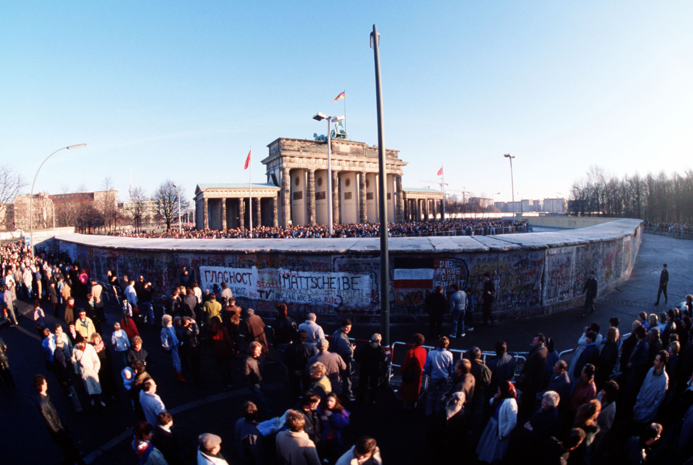

Directions: The five stations below are the record of the Cold War's ending, in the order the events happened. Study each station and answer its questions. At every station, mark whose choice moved the sequence at that step: Gorbachev's, Reagan's, the crowds', or the weight of the Soviet system itself. In Part 2, order the full sequence and argue which cause carried the most weight.
Source: Ronald Reagan, Remarks at the Brandenburg Gate, June 12, 1987 (American Presidency Project). Passages are quoted from the audited text; cuts are marked with ellipses.
Behind me stands a wall that encircles the free sectors of this city, part of a vast system of barriers that divides the entire continent of Europe. ... Yet it is here in Berlin where the wall emerges most clearly; here, cutting across your city, where the news photo and the television screen have imprinted this brutal division of a continent upon the mind of the world.
We hear much from Moscow about a new policy of reform and openness. Some political prisoners have been released. ... Are these the beginnings of profound changes in the Soviet state? Or are they token gestures, intended to raise false hopes in the West, or to strengthen the Soviet system without changing it? We welcome change and openness; for we believe that freedom and security go together, that the advance of human liberty can only strengthen the cause of world peace.
There is one sign the Soviets can make that would be unmistakable, that would advance dramatically the cause of freedom and peace. General Secretary Gorbachev, if you seek peace, if you seek prosperity for the Soviet Union and Eastern Europe, if you seek liberalization: Come here to this gate! Mr. Gorbachev, open this gate! Mr. Gorbachev, tear down this wall!
What test does Reagan set for Gorbachev's reforms, and why does he frame the wall, rather than a weapons count, as the proof? Whose choice does this station put at the center?
Source: Treaty Between the United States of America and the Union of Soviet Socialist Republics on the Elimination of Their Intermediate-Range and Shorter-Range Missiles, signed at Washington, December 8, 1987 (United States Department of State). Passages are quoted from the treaty text; cuts are marked with ellipses.
The United States of America and the Union of Soviet Socialist Republics, hereinafter referred to as the Parties, Conscious that nuclear war would have devastating consequences for all mankind, Guided by the objective of strengthening strategic stability, Convinced that the measures set forth in this Treaty will help to reduce the risk of outbreak of war and strengthen international peace and security ... Have agreed as follows:
Article I. In accordance with the provisions of this Treaty ... each Party shall eliminate its intermediate-range and shorter-range missiles, not have such systems thereafter, and carry out the other obligations set forth in this Treaty.
Article II. ... The term intermediate-range missile means a ground-launched ballistic missile or a ground-launched cruise missile having a range capability in excess of 1000 kilometers but not in excess of 5500 kilometers.
How does this treaty differ from an arms limit, in its own words? What had to be true of the two governments for Article I to be signed at all, six months after the speech at Station 1?
Source: Summary prepared for this lesson from the lesson reading, read against the photograph below. SSgt. F. Lee Corkran, United States Air Force, Crowds at the Brandenburg Gate, Berlin, December 1, 1989 (United States Department of Defense). This station pairs a labeled summary with a dated photograph; the summary is not a reproduced document.

Through the autumn of 1989, East Germans pressed their government in growing numbers: Monday demonstrations in Leipzig grew from hundreds to hundreds of thousands, and thousands left the country through Hungary's opened border. On November 9, the government tried to ease the pressure by loosening its travel rules. At a press conference that evening, a spokesman who had not been fully briefed announced the new rules and, pressed on when they took effect, answered that they applied immediately. Television carried the announcement across both German states. Thousands of East Berliners walked to the crossing points and demanded to pass. The border guards held no orders covering crowds of that size, and late that night they stood aside. Crowds climbed the wall at the Brandenburg Gate with hammers. No shot was fired, in Berlin or from the Soviet forces stationed in East Germany, whose commander in Moscow had refused all autumn to hold the empire by force.
Separate the night of November 9 into its moving parts: the government's intention, the spokesman's words, the crowd's action, and the guards' decision. Then answer from the photograph: what does a crowd photographed in daylight, a month later, at the same gate, show about what November 9 had changed? Whose choice moved this step?
Source: Summary prepared for this lesson from the public record of August 19 to 21, 1991, as carried in the lesson reading. This station is a labeled summary, not a reproduced document.
By the summer of 1991, the Soviet republics were claiming powers the center could no longer refuse, and a new union treaty was set to be signed on August 20. On August 19, a group of hard line officials, including the vice president, the prime minister, and the heads of the army, the interior ministry, and the KGB, announced a state of emergency, declared Gorbachev unable to govern, and held him at his vacation home in Crimea. Tanks entered Moscow. The coup failed within three days. Boris Yeltsin, the elected president of the Russian republic, climbed onto a tank outside the Russian parliament and called for resistance. Crowds built barricades and defended the building through two nights. Key army units refused orders to attack it, and three young men were killed by armored vehicles in a single clash on the second night, the coup's only fatal assault. On August 21 the plotters' authority collapsed, and Gorbachev returned to a capital that now took its orders from Yeltsin.
The plotters held the army, the police ministries, and the television stations. Name two assets they did not hold, from the record, and explain how each one worked against them. Whose choice moved this step?
Source: Summary prepared for this lesson from the public record of December 1991, as carried in the lesson reading. This station is a labeled summary, not a reproduced document.
On December 1, 1991, Ukraine voted overwhelmingly for independence in a referendum, removing the second largest republic from any union Gorbachev could still propose. On December 8, the leaders of Russia, Ukraine, and Belarus met at Belovezha in Belarus and declared that the Soviet Union had ceased to exist, forming a Commonwealth of Independent States in its place. On December 21, eleven republics joined the new commonwealth at Alma-Ata, and the Soviet Union's remaining institutions passed to them. On December 25, Gorbachev resigned as president of the Soviet Union in a televised address, and that evening the Soviet flag was lowered over the Kremlin and the Russian flag raised in its place. No foreign army had entered Moscow, and no civil war had been fought over the succession. The state that had stood since 1922 ended by declaration, referendum, and resignation.
List the four dated steps in this record in order, and name the actor at each step. Then state what did not happen in December 1991, and why the absence belongs in the record. Whose choice moved this final step, or had the choices run out?
The five stations offer four candidate causes for the Cold War's ending: Reagan's pressure and diplomacy, Gorbachev's reforms and his refusal to shoot, the crowds who acted in 1989 and 1991, and the Soviet system's own failure, which made reform unavoidable and obedience optional. The causes are not equal, and this task asks you to weigh them rather than list them.
The sequence. Number the stations in the order the events happened, and beside each one write the name of the actor whose choice moved it, using your Part 1 markings.
Your verdict. Which cause carried the most weight in ending the Cold War the way it ended, between 1989 and 1991? State your verdict in the first two sentences, then support it from at least three stations, citing stations by number.
The strongest counterclaim. State the strongest case for a different cause, at full strength, from the documents. Then answer it: what does your chosen cause explain that the counterclaim cannot?
What test does Reagan set, and whose choice stands at the center? The test is a single unmistakable sign: if Gorbachev seeks peace, prosperity, and liberalization, he should come to the gate, open it, and tear down the wall. Reagan frames the wall rather than a weapons count as the proof because his argument in the speech is that the division of Europe, not the arsenals, is the contest's core: the barriers impose a totalitarian state's will on ordinary people, and a reform that left the wall untouched would be the token gesture he warns against in the passage's second paragraph. The station puts Gorbachev's choice at the center, with Reagan's as the pressure applied to it. Credit students who note the date: in June 1987 the wall had stood for twenty six years, and the speech predicted nothing about 1989; it set a standard by which reform would be judged.
How does it differ from an arms limit, and what had to be true for it to be signed? A limit caps how many weapons each side may keep; Article I requires each party to eliminate its intermediate-range and shorter-range missiles entirely and not have such systems thereafter. The treaty abolished a class rather than rationing it, and its definitions run by range, in excess of 1000 kilometers and not in excess of 5500, so no missile in the band survived on either side. For the signatures to happen, six months after the Berlin speech, each government had to accept the other's inspectors and destruction schedules on its own territory. The sequence is the finding: public challenge in June, elimination treaty in December, between the same two men.
Separate the night, and read the photograph. The government intended a limited concession, looser travel rules, to relieve the pressure of the Leipzig demonstrations and the departures through Hungary. The spokesman, not fully briefed, misstated the concession's timing as immediate. The crowd turned a televised error into a fact by walking to the crossings in thousands and demanding to pass. The guards, holding no orders for that situation, stood aside, and no Soviet force intervened, because Gorbachev had refused all autumn to hold the empire by force. All four parts are required; an answer with only the crowd, or only the mistake, has half the mechanism. The photograph shows the result a month later: crowds in daylight at the gate itself, standing where passage had been forbidden, with the gate freely accessible from the East and its formal opening to the West still three weeks away.
What did the plotters not hold? Any two, with their working stated. They did not hold legitimacy: Yeltsin was an elected president and they were appointees announcing an emergency, and his stand on the tank gave resistance a lawful face. They did not hold the crowd: Muscovites built barricades and defended the Russian parliament through two nights, so an assault would have meant killing citizens on camera in the capital. They did not hold the army's obedience: key units refused orders to attack, which left the plotters with tanks in the streets and no force willing to use them at scale. They did not hold the republics, which treated the coup as Moscow's crisis rather than their government's act. The step was moved by the crowd and by the soldiers who refused, answering choices Gorbachev's reforms had made possible: an elected Russian president and a public that had practiced arguing back since 1985.
The four steps, the actors, and the absence. December 1: Ukraine's voters, choosing independence by referendum. December 8: the leaders of Russia, Ukraine, and Belarus at Belovezha, declaring the Soviet Union ceased and forming the Commonwealth of Independent States. December 21: eleven republics at Alma-Ata, joining the commonwealth and taking over the union's institutions. December 25: Gorbachev, resigning on television, followed by the flag change over the Kremlin that evening. What did not happen: no foreign invasion, no civil war over the succession, and no attempt by the Soviet army to reverse the declarations by force. The absence belongs in the record because earlier changes of that scale in the region had been settled by armies, and a superpower's nuclear arsenal changed hands that month by paperwork. On whose choice the step turned is the verdict question itself: by December the republics' choices were the active ones, and Gorbachev's remaining choice was only whether to resist them, which he declined.
Full credit should be awarded if the verdict:
Teacher note on the verdicts. The most common failure is the list disguised as a verdict, four causes in four sentences with no weighing. Send those back to the first two sentences. The second failure is hindsight: students who call the ending inevitable should be asked to explain the guards at the crossings, who that night did not know how it would end.